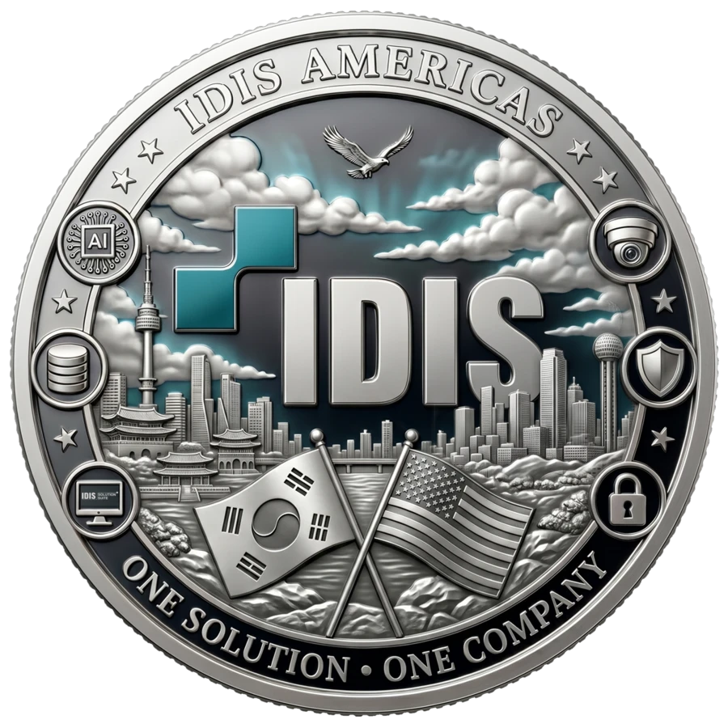

THE LIMITED COIN SERIES
More Than a Coin.
A Story to Keep.
IDIS limited coins connect a physical event keepsake with a digital experience. Each event side is its own collectible, while the shared IDIS side represents the series that connects them.

The collection is designed to grow from event to event and year to year. Scan a unique event side to unlock that state or city coin on your device, then revisit your collection whenever you return.
The IDIS side is the signature face of the series. It is not counted as a state-side collectible, so your collection remains centered on the places, events and stories you discovered.
COLLECT • SCAN • DISCOVER